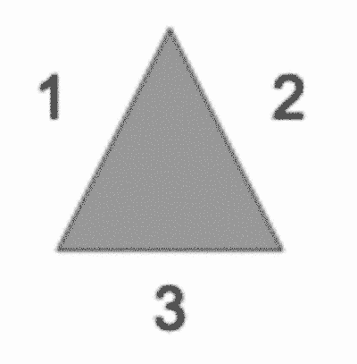
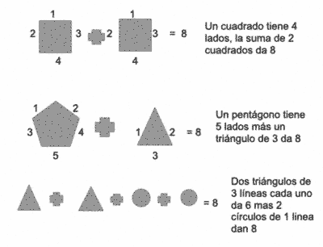

Introducción
La información en nuestros días le brinda poder a cada uno de los seres humanos que habitan nuestro mundo híper – conectado, es por lo anterior que he decidido inventar un sistema de encriptación basado en números y siluetas ya sea para implementar de forma digital o análoga. Este documento menciona las bases del sistema así como la manera en la que se cifra y descifra. La complejidad de éste sistema dependerá únicamente del encriptador así como de las reglas que determine para descencriptar el mensaje.
Cada una de las letras tiene un número que las representa, éste número puede variar dependiendo de la complejidad que se desee, por ejemplo: A = 1 o A = 27 / Z = 27 o Z= 1
Cada una de las formas tienen cierta cantidad de líneas que las hace, es decir, un triángulo está formado por 3 líneas:
Lo anterior puede parecer obvio, sin embargo es importante para el proceso. En éste sistema los números de las letras y las siluetas se unen para encriptar palabras y llegar al número de cada letra deseada. Por ejemplo tomemos la letra H que es la octava letra del abecedario, por lo tanto: H =8
Se esconderá ese 8 usando las formas dado que:
Ejemplo práctico: La palabra “HOLA” podría encriptarse de varias maneras:
El sistema, como se mencionó al inicio de éste documento puede acomplejarse dependiendo de la habilidad del encriptador y las operaciones que realice, es decir, para llegar al 8 de la H podemos sumar 5+3 o restar 10-2 o multiplicar 4×2, etc.
Este documento plantea las bases de la encriptación por el método Numérico – Silueteado
Gracias por leer
Por: Israel G. Bistrain 2021
Si lo deseas puedes seguirme en Mastodon:
@supersnufkin@mastodon.social